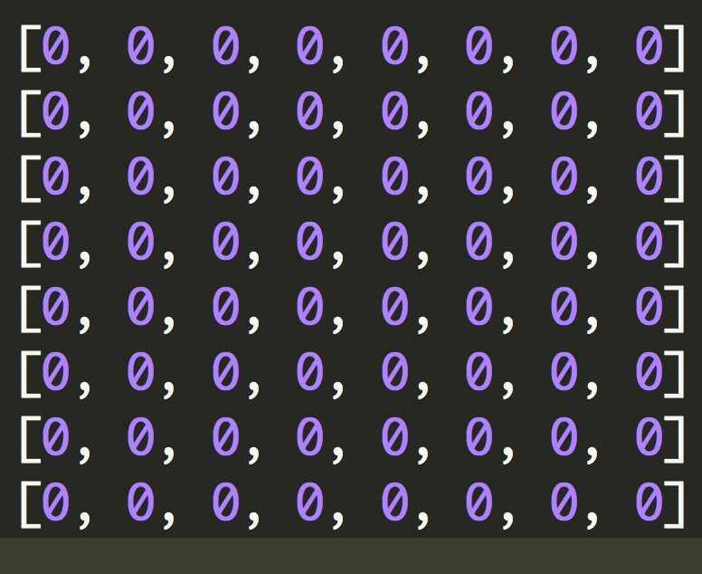

Ruby Classes
March 8th, 2015
Classes are indispensible in Ruby for structuring programs and endowing objects with inalienable rights (though objects are not 100% bound to adhere to their Class particularities).
Here is a simple example of a Class.

First thing you'll notice is that classes are called into being by the word "class", followed by the name of the class, with the first letter being capitalized.
There are different kinds of methods and variables that can nest within a class. If you'd like your class to perform some action, whether internal or external, upon initial instantiation, it is typical to set up an "initialize" method. In this example our initialize method creates an 8x8 array, approximating the dimensions of a chess board.
You'll notice at the top of our class we have a couple attribute methods: attr_accessor and attr_reader. Those two attribute methods, in addition to attr_writer, are convenient built-in methods in Ruby to save time and effort. They replace the longer "getter" and "setter" methods, which allow you to retrieve and also set a method.
For example, we could call the show_board method on a new instantiation of Chess (game1), and it would display the 8x8 chess board array. Or you could use an attribute method to accomplish the same thing, by calling "board" on game1, which corresponds to the attr_reader method we initially set up.
Attr_accessor methods are more flexible, since they can be used to call and set methods. In the bottom of the above picture, you can see we set game1.color = "standard". If we then call color on game1, we get the expected output. Likewise we can call board on game1 and we get the following:
